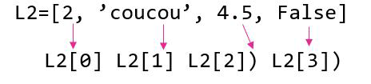
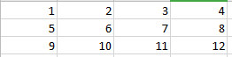

Les listes et les chaînes de caractères ont un comportement semblable et certaines méthodes communes. Cependant, elles possèdent également des méthodes spécifiques et il conveindra de ne pas les confondre.
Chaînes de caratères⚓︎
une chaîne de caractères est une suite de caractères alphanumériques (lettres, chiffres, symboles) et appartient au type string.
Indexation : se repérer dans la chaîne⚓︎
Chaque caractère de la chaîne possède une coordonnée. On l'appelle index. On peut le retrouver par rapport à sa position dans la chaîne.
On compte la position (l'index) en partant de la gauche et en démarrant à 0 (ou en démarrant de la droite en commençant par -1).
1 2 3 4 | |
slices.[index de départ : index de fin (exclus)]
Exemples
[2:5] : sélectionne les caractères de la position 2 à la position 4 (inclus)
Si on ne précise pas la fin, c'est que l'on va jusqu'au bout
[2:] : du caractère de position 2 à la fin
Si on ne précise pas l'index de début on démarre au début.
[:7] : du début jusqu'à l'index 6
Longueur de la chaîne⚓︎
On peut utiliser l'instruction len(chaine) pour connaitre le nombre de caractères d'une chaîne.
1 2 3 4 5 6 | |
Caractère d'échappement⚓︎
Lorsque l'on écrit une chaîne de caractère on peut utiliser les apostrophes pour encadrer la chaîne. Mais qu'en ai-t-il quand un des caractères d la chaine est un aporstrophe?
On utilise le caractère d'échappemetn pour signaler à python que ce n'est pas la fin mais juste un caractère comme un autre :
1 2 | |
Concaténation⚓︎
Pour joindre deux chaîne l'une à la suite de l'autre (on parle de concaténation) on utilise simplement l'opération d'addition :
1 2 3 | |
Attention
Les autres opérations mathématiques n'auront aucun effet sur une chaîne de carcatères.
Les opérations sur les chaînes de caractères⚓︎
Tester la présence d'un caractère dans la chaîne
On peut tester la présence d'un élément dans une chaîne avec in qui renvoie True ou False.
1 2 3 4 5 6 7 | |
Nombre d'occurences⚓︎
On peut compter le nombre de fois ou une chaîne est présente dans une autre avec la focntion count():
1 2 3 4 5 6 | |
Remplacer des éléments :⚓︎
On peut remplacer les 'o' par des 'u' par exemples :
1 2 3 4 5 6 | |
Minuscules et majuscules⚓︎
chaine.upper() : met la chaine de caractères en majuscules
chaine.lower() : met la chaine de caractères en minuscules
D'autres fonctions utilises ici
les Listes⚓︎
Les listes en python sont des objets capables de stocker plusieurs objets (même de types différents).
Par exemple :
1 2 3 4 5 6 | |
Indexation⚓︎
Le principe est le même que pour es chaînes de caractères :

Le comptge commence à 0 par la gauche ou à -1 par la droite.
Slices
L[2:6:2] : sélectionne la portion de liste entre l’indice 2 (inclus) et 6 (exclu) avec
un pas de 2 (optionnel)
L[:6] : sélectionne la portion de liste du début à l’élément d’indice 6 (exclu)
L[2:] : sélectionne la portion de liste entre l’indice 2 (inclus) jusqu’à la fin
L[:] : reprend toute la liste et permet de faire une copie.
Créer une liste⚓︎
Créer une liste vide :
1 | |
1 | |
1 2 3 4 5 6 7 8 | |
Créer une liste par compréhension :⚓︎
1 | |
L=[expression intervalle condition]Ici par exemple on rempli une liste avec les valeurs de i comprises entre 0 et 1 seulement si i est pair.
Ajouter un élement dans une liste⚓︎
La méthode append() ajoute un élément dans une liste en l'ajoutant à la fin.
1 2 3 4 5 6 | |
Autres fonctions sur les listes⚓︎
Voici une liste non exhaustive des focntions les plus utiles :
L.sort() : trie la liste dans l'ordre croissant (de ses codes ascii)
L.reverse() : inverse l'ordre des éléments de la liste
L.index(element) : retourne l'index de l'élément dans la liste
L.remove(element) : supprime l'élément de la liste (ne s'applique qu'au premier rencontré)
del(L[2]): supprime l'élément d'index 2
L.insert(index,element) : insère un élément à l'index voulu
min(L) et max(L) : Renvoient le minimum ou le maximum de la liste (code ascii)
Liste_1.extend(Liste_2): concatène les listes (fonctionnement avec + également
D'autres fonctions ici
Les tableaux⚓︎
En python un tableau est une liste de listes. Chaque liste représente en fait une ligne et les index identiques représentent les éléments d'une même colonne.

Ce tableau peut être représenter ainsi :
1 | |
Accéder aux éléments d'un tableau⚓︎
Atteindre une ligne⚓︎
La ligne correspond à une des listes. Par exemple, la première ligne Tab[0]correspond à la liste [1,2,3,4].
Atteindre une case⚓︎
Dans le tableau ci-dessus on souhaite accéder à l'élément 7. 7 appartient à la deuxième liste de Tab.
Tab[1] renvoie donc la liste [5,6,7,8].
Si on veut le 3e élément de cette liste (index 2) on utilise [2] soit Tab[1][2].
Atteindre une colonne⚓︎
Une colonne en python n'est pas identifiable directement. Il s'agit en fait de tous les éléments de meme index de chaque ligne.
On veut afficher la 3e colonne du tableau. Ce sont en fait les éléments d'index 2 de chaque ligne.
Il va donc falloir parcourir chaque ligne et en extraire l'élément d'index 2.
1 2 | |
Parcourir un tableau⚓︎
Pour accéder aux élément d'un tableau un par un il va falloir parcourir chaque ligne et à l'intérieur de chaque ligne parcourir toute les cases :
1 2 3 4 5 | |
1 2 3 | |
len(Tab) qui représente le nombre de lignes (nombre de sous_listes que contient tab) et len(Tab[i])(nombre d'éléments de la ligne i).
Créer un tableau⚓︎
On crée un tableau comme une liste, mais il faudra faire deux boucles imbriquées pour remplir chaque case :
1 2 3 4 5 6 7 | |